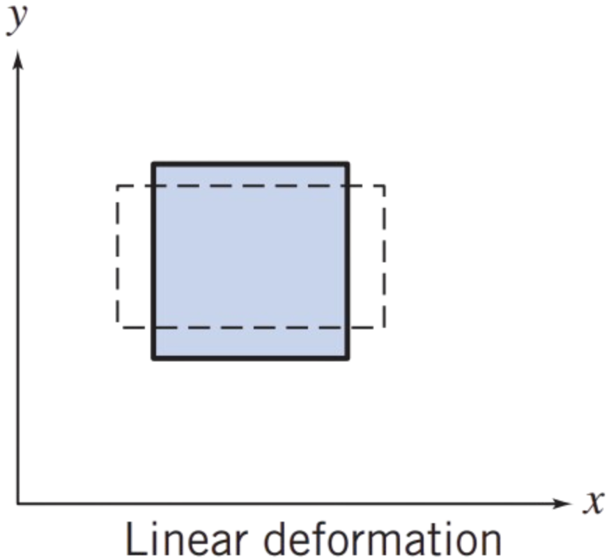

During linear deformation, the shape of the fluid element, described by the angles at its vertices, remains unchanged, since all right angles continue to be right angles , the element will change length in the \( x \) direction only if \( \partial u / \partial x \) is other than zero.
Similarly, a change in the \( y \) dimension requires a nonzero value of \( \partial v / \partial y \) and a change in the \( z \) dimension requires a nonzero value of \( \partial w / \partial z \).
These quantities represent the components of longitudinal rates of strain in the \( x \), \( y \), and \( z \) directions, respectively
Changes in length of the sides may produce changes in volume of the element. The rate of local instantaneous volume dilation is given by \[ \text{volume dilation rate} = \frac{\partial v_x}{\partial x} + \frac{\partial v_y}{\partial y} + \frac{\partial v_z}{\partial z} \]
For incompressible flow, the rate of volume dilation is zero \[ \frac{\partial u}{\partial x} + \frac{\partial v}{\partial y} + \frac{\partial w}{\partial z} = \nabla \cdot \vec{V} = 0 \]